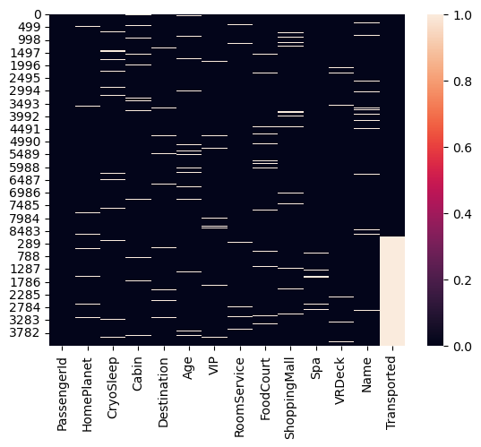
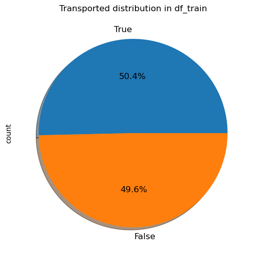
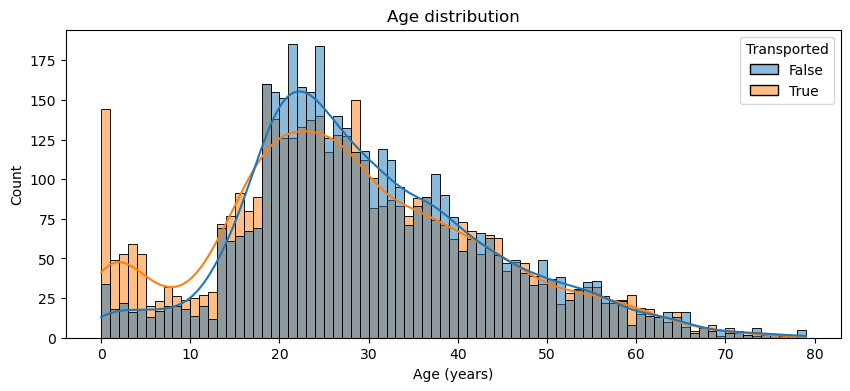
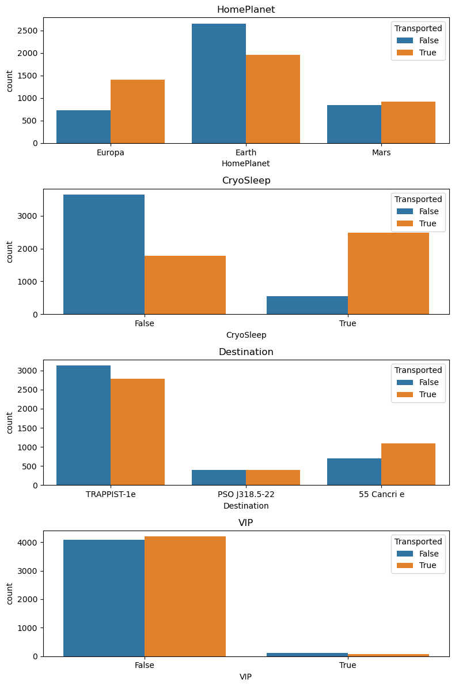

import pandas as pd
import numpy as np
from scipy.stats import randint, uniform
import seaborn as sns
import matplotlib.pyplot as plt
%matplotlib inline
from sklearn.model_selection import train_test_split, RandomizedSearchCV
from sklearn.metrics import accuracy_score, classification_report, confusion_matrix
from lightgbm import LGBMClassifierThe Spaceship Titanic with LightGBM
Python
ML
Pandas
Seaborn
LightGBM
A LightGBM classifier is trained with hyperparameters tuned using a random search to achieve >80% classification accuracy on the Spaceship Titanic dataset.
import sys
print("Python version:")
print(sys.version)Python version:
3.11.4 | packaged by Anaconda, Inc. | (main, Jul 5 2023, 13:38:37) [MSC v.1916 64 bit (AMD64)]Data imports and exploration
We use the Spaceship Titanic dataset from Kaggle, designed as a lighthearted, fictional reimagining of the famous (infamous) titanic dataset. The goal is to predict if passengers on the Spaceship Titanic were transported into an alternate dimension by a collision with a spacetime anamoly, based upon known data.
The data is provided in two files, train.csv and test.csv. The training data train.csv has all of the following features, while the test data test.csv has all of the following features minus the target Transported feature.
- PassengerId - A unique Id for each passenger. Each Id takes the form gggg_pp where gggg indicates a group the passenger is travelling with and pp is their number within the group. People in a group are often family members, but not always.
- HomePlanet - The planet the passenger departed from, typically their planet of permanent residence.
- CryoSleep - Indicates whether the passenger elected to be put into suspended animation for the duration of the voyage. Passengers in cryosleep are confined to their cabins.
- Cabin - The cabin number where the passenger is staying. Takes the form deck/num/side, where side can be either P for Port or S for Starboard.
- Destination - The planet the passenger will be debarking to.
- Age - The age of the passenger.
- VIP - Whether the passenger has paid for special VIP service during the voyage.
- RoomService, FoodCourt, ShoppingMall, Spa, VRDeck - Amount the passenger has billed at each of the Spaceship Titanic’s many luxury amenities.
- Name - The first and last names of the passenger.
- Transported - Whether the passenger was transported to another dimension. This is the target, the column you are trying to predict.
The aim of the competition is to train a model on the training data and use it to predict labels for the test data. Kaggle then assigns a score to the submission by comparing the submitted labels with the known, hidden values.
df_train = pd.read_csv('train.csv')
df_test = pd.read_csv('test.csv')
# Combine train and test sets into a single dataframe for convenience
data = pd.concat([df_train,df_test],axis=0)
data| PassengerId | HomePlanet | CryoSleep | Cabin | Destination | Age | VIP | RoomService | FoodCourt | ShoppingMall | Spa | VRDeck | Name | Transported | |
|---|---|---|---|---|---|---|---|---|---|---|---|---|---|---|
| 0 | 0001_01 | Europa | False | B/0/P | TRAPPIST-1e | 39.0 | False | 0.0 | 0.0 | 0.0 | 0.0 | 0.0 | Maham Ofracculy | False |
| 1 | 0002_01 | Earth | False | F/0/S | TRAPPIST-1e | 24.0 | False | 109.0 | 9.0 | 25.0 | 549.0 | 44.0 | Juanna Vines | True |
| 2 | 0003_01 | Europa | False | A/0/S | TRAPPIST-1e | 58.0 | True | 43.0 | 3576.0 | 0.0 | 6715.0 | 49.0 | Altark Susent | False |
| 3 | 0003_02 | Europa | False | A/0/S | TRAPPIST-1e | 33.0 | False | 0.0 | 1283.0 | 371.0 | 3329.0 | 193.0 | Solam Susent | False |
| 4 | 0004_01 | Earth | False | F/1/S | TRAPPIST-1e | 16.0 | False | 303.0 | 70.0 | 151.0 | 565.0 | 2.0 | Willy Santantines | True |
| ... | ... | ... | ... | ... | ... | ... | ... | ... | ... | ... | ... | ... | ... | ... |
| 4272 | 9266_02 | Earth | True | G/1496/S | TRAPPIST-1e | 34.0 | False | 0.0 | 0.0 | 0.0 | 0.0 | 0.0 | Jeron Peter | NaN |
| 4273 | 9269_01 | Earth | False | NaN | TRAPPIST-1e | 42.0 | False | 0.0 | 847.0 | 17.0 | 10.0 | 144.0 | Matty Scheron | NaN |
| 4274 | 9271_01 | Mars | True | D/296/P | 55 Cancri e | NaN | False | 0.0 | 0.0 | 0.0 | 0.0 | 0.0 | Jayrin Pore | NaN |
| 4275 | 9273_01 | Europa | False | D/297/P | NaN | NaN | False | 0.0 | 2680.0 | 0.0 | 0.0 | 523.0 | Kitakan Conale | NaN |
| 4276 | 9277_01 | Earth | True | G/1498/S | PSO J318.5-22 | 43.0 | False | 0.0 | 0.0 | 0.0 | 0.0 | 0.0 | Lilace Leonzaley | NaN |
12970 rows × 14 columns
data.info()<class 'pandas.core.frame.DataFrame'>
Index: 12970 entries, 0 to 4276
Data columns (total 14 columns):
# Column Non-Null Count Dtype
--- ------ -------------- -----
0 PassengerId 12970 non-null object
1 HomePlanet 12682 non-null object
2 CryoSleep 12660 non-null object
3 Cabin 12671 non-null object
4 Destination 12696 non-null object
5 Age 12700 non-null float64
6 VIP 12674 non-null object
7 RoomService 12707 non-null float64
8 FoodCourt 12681 non-null float64
9 ShoppingMall 12664 non-null float64
10 Spa 12686 non-null float64
11 VRDeck 12702 non-null float64
12 Name 12676 non-null object
13 Transported 8693 non-null object
dtypes: float64(6), object(8)
memory usage: 1.5+ MBdf_train.describe()| Age | RoomService | FoodCourt | ShoppingMall | Spa | VRDeck | |
|---|---|---|---|---|---|---|
| count | 8514.000000 | 8512.000000 | 8510.000000 | 8485.000000 | 8510.000000 | 8505.000000 |
| mean | 28.827930 | 224.687617 | 458.077203 | 173.729169 | 311.138778 | 304.854791 |
| std | 14.489021 | 666.717663 | 1611.489240 | 604.696458 | 1136.705535 | 1145.717189 |
| min | 0.000000 | 0.000000 | 0.000000 | 0.000000 | 0.000000 | 0.000000 |
| 25% | 19.000000 | 0.000000 | 0.000000 | 0.000000 | 0.000000 | 0.000000 |
| 50% | 27.000000 | 0.000000 | 0.000000 | 0.000000 | 0.000000 | 0.000000 |
| 75% | 38.000000 | 47.000000 | 76.000000 | 27.000000 | 59.000000 | 46.000000 |
| max | 79.000000 | 14327.000000 | 29813.000000 | 23492.000000 | 22408.000000 | 24133.000000 |
df_test.describe()| Age | RoomService | FoodCourt | ShoppingMall | Spa | VRDeck | |
|---|---|---|---|---|---|---|
| count | 4186.000000 | 4195.000000 | 4171.000000 | 4179.000000 | 4176.000000 | 4197.000000 |
| mean | 28.658146 | 219.266269 | 439.484296 | 177.295525 | 303.052443 | 310.710031 |
| std | 14.179072 | 607.011289 | 1527.663045 | 560.821123 | 1117.186015 | 1246.994742 |
| min | 0.000000 | 0.000000 | 0.000000 | 0.000000 | 0.000000 | 0.000000 |
| 25% | 19.000000 | 0.000000 | 0.000000 | 0.000000 | 0.000000 | 0.000000 |
| 50% | 26.000000 | 0.000000 | 0.000000 | 0.000000 | 0.000000 | 0.000000 |
| 75% | 37.000000 | 53.000000 | 78.000000 | 33.000000 | 50.000000 | 36.000000 |
| max | 79.000000 | 11567.000000 | 25273.000000 | 8292.000000 | 19844.000000 | 22272.000000 |
sns.heatmap(data.isnull())<Axes: >
df_train.isnull().sum()PassengerId 0
HomePlanet 201
CryoSleep 217
Cabin 199
Destination 182
Age 179
VIP 203
RoomService 181
FoodCourt 183
ShoppingMall 208
Spa 183
VRDeck 188
Name 200
Transported 0
dtype: int64df_test.isnull().sum()PassengerId 0
HomePlanet 87
CryoSleep 93
Cabin 100
Destination 92
Age 91
VIP 93
RoomService 82
FoodCourt 106
ShoppingMall 98
Spa 101
VRDeck 80
Name 94
dtype: int64As we can see, all features other than PassengerId and Transported have a non-zero number of null values for both the train and test sets. Deciding how to fill these null values is a crucial step in contructing a solution. Our programme is quite simple, but more complicated methods to fill can result in better performing models.
plt.figure(figsize=(6,6))
df_train['Transported'].value_counts().plot.pie(autopct='%1.1f%%', shadow=True, textprops={'fontsize':12}).set_title("Transported distribution in df_train")Text(0.5, 1.0, 'Transported distribution in df_train')
The above figure shows that the label is very well balanced in the train set, with roughly half of all passengers transported.
plt.figure(figsize=(10,4))
sns.histplot(data=df_train, x='Age', hue='Transported', binwidth=1, kde=True)
plt.title('Age distribution')
plt.xlabel('Age (years)')Text(0.5, 0, 'Age (years)')
fig = plt.figure(figsize=(8,12))
for i, var_name in enumerate(['HomePlanet', 'CryoSleep', 'Destination', 'VIP']):
ax = fig.add_subplot(4,1,i+1)
sns.countplot(data=df_train, x=var_name, axes=ax, hue='Transported')
ax.set_title(var_name)
fig.tight_layout()
Missing values and feature engineering
Expenses_features = ['RoomService','FoodCourt','ShoppingMall','Spa','VRDeck']Fill the null values in the Expenses_features with 0 for the passengers in cryosleep
data.loc[:,Expenses_features] = data.apply(lambda x: 0 if x.CryoSleep == True else x, axis=1)Create a new feature TotalExpenditure, just the sum of the Expenses_features
data['TotalExpenditure'] = data.loc[:,Expenses_features].sum(axis=1)Fill the null values in CryoSleep with True if TotalExpenditure == 0. This of course is not necessarily true - a passenger doesn’t have to be in cryostatis to spend nothing. However, it seems a reasonable assumption for the purposes of filling missing values. Fill the other null values in CryoSleep with False.
data.loc[:,['CryoSleep']] = data.apply(lambda x: True if x.TotalExpenditure == 0 and pd.isna(x.CryoSleep) else x, axis=1)
data['CryoSleep'] = data['CryoSleep'].fillna(False)Filling HomePlanet, Destination and VIP
df_train['HomePlanet'].value_counts()HomePlanet
Earth 4602
Europa 2131
Mars 1759
Name: count, dtype: int64df_test['HomePlanet'].value_counts()HomePlanet
Earth 2263
Europa 1002
Mars 925
Name: count, dtype: int64The mode for HomePlanet for both the train and test sets is “Earth”, so we use this to fill the null values
data['HomePlanet'] = data['HomePlanet'].fillna('Earth')df_train['Destination'].value_counts()Destination
TRAPPIST-1e 5915
55 Cancri e 1800
PSO J318.5-22 796
Name: count, dtype: int64df_test['Destination'].value_counts()Destination
TRAPPIST-1e 2956
55 Cancri e 841
PSO J318.5-22 388
Name: count, dtype: int64The mode for Destination for both the train and test sets is “TRAPPIST-1e”, so we use this to fill the null values
data['Destination'] = data['Destination'].fillna('TRAPPIST-1e')df_train['VIP'].value_counts()VIP
False 8291
True 199
Name: count, dtype: int64df_test['VIP'].value_counts()VIP
False 4110
True 74
Name: count, dtype: int64data['VIP'] = data['VIP'].fillna(False)data.isna().sum()PassengerId 0
HomePlanet 0
CryoSleep 0
Cabin 299
Destination 0
Age 270
VIP 0
RoomService 170
FoodCourt 180
ShoppingMall 175
Spa 177
VRDeck 177
Name 294
Transported 4277
TotalExpenditure 0
dtype: int64Filling Age and the expenditure features
To fill the remaining null values in Age and Expenses_features we will use the median, to reduce the influence of outliers. This requires seperating data back into constituent train and test sets, to avoid data leakage.
train = data[:len(df_train)]
test = data[len(df_train):].drop('Transported', axis=1)print(len(train) == len(df_train))Truetrain.loc[:, 'Age'] = train['Age'].fillna(train['Age'].median())
test.loc[:, 'Age'] = test['Age'].fillna(test['Age'].median())train.loc[:,Expenses_features] = train[Expenses_features].fillna(train[Expenses_features].median())
test.loc[:,Expenses_features] = test[Expenses_features].fillna(test[Expenses_features].median())print('Remaining null values in train:\n')
print(train.isna().sum())
print('\nRemaining null values in test:\n')
print(test.isna().sum())Remaining null values in train:
PassengerId 0
HomePlanet 0
CryoSleep 0
Cabin 199
Destination 0
Age 0
VIP 0
RoomService 0
FoodCourt 0
ShoppingMall 0
Spa 0
VRDeck 0
Name 200
Transported 0
TotalExpenditure 0
dtype: int64
Remaining null values in test:
PassengerId 0
HomePlanet 0
CryoSleep 0
Cabin 100
Destination 0
Age 0
VIP 0
RoomService 0
FoodCourt 0
ShoppingMall 0
Spa 0
VRDeck 0
Name 94
TotalExpenditure 0
dtype: int64Redefine data as the concatenation of train and test
data = pd.concat([train,test], axis=0)New features - AgeGroup, CabinSide and GroupSize
Create a new feature AgeGroup by binning the Age feature into 8 different categories.
data['Age'].max()79.0data['AgeGroup'] = 0
for i in range(8):
data.loc[(data.Age >= 10*i) & (data.Age < 10*(i + 1)), 'AgeGroup'] = idata['AgeGroup'].value_counts()AgeGroup
2 4460
3 2538
1 2235
4 1570
0 980
5 809
6 312
7 66
Name: count, dtype: int64Create a dummy feature Group by extracting the first character from the PassengerId column. Use Group to define a new feature GroupSize indicating how many people are in the passengers group. Drop the feature Group as it has too many values to be useful.
data['Group'] = data['PassengerId'].apply(lambda x: x.split('_')[0]).astype(int)
data['GroupSize'] = data['Group'].map(lambda x: data['Group'].value_counts()[x])
data = data.drop('Group', axis=1)Create a new boolean feature Solo, indicating if a passenger is in a group just by themselves
data['Solo'] = (data['GroupSize'] == 1).astype(int)We won’t use Cabin directly, but we engineer a new feature CabinSide by taking the last character of Cabin. “P” for port and “S” for starboard. To implement this we fill Cabin with a placeholder value.
data['Cabin'] = data['Cabin'].fillna('T/0/P')data['CabinSide'] = data['Cabin'].apply(lambda x: x.split('/')[-1])Finishing preprocessing - dropping features and splitting into train and test sets
data = data.drop(['PassengerId','Cabin','Name'], axis=1)data.isna().sum()HomePlanet 0
CryoSleep 0
Destination 0
Age 0
VIP 0
RoomService 0
FoodCourt 0
ShoppingMall 0
Spa 0
VRDeck 0
Transported 4277
TotalExpenditure 0
AgeGroup 0
GroupSize 0
Solo 0
CabinSide 0
dtype: int64data| HomePlanet | CryoSleep | Destination | Age | VIP | RoomService | FoodCourt | ShoppingMall | Spa | VRDeck | Transported | TotalExpenditure | AgeGroup | GroupSize | Solo | CabinSide | |
|---|---|---|---|---|---|---|---|---|---|---|---|---|---|---|---|---|
| 0 | Europa | False | TRAPPIST-1e | 39.0 | False | 0.0 | 0.0 | 0.0 | 0.0 | 0.0 | False | 0.0 | 3 | 1 | 1 | P |
| 1 | Earth | False | TRAPPIST-1e | 24.0 | False | 109.0 | 9.0 | 25.0 | 549.0 | 44.0 | True | 736.0 | 2 | 1 | 1 | S |
| 2 | Europa | False | TRAPPIST-1e | 58.0 | True | 43.0 | 3576.0 | 0.0 | 6715.0 | 49.0 | False | 10383.0 | 5 | 2 | 0 | S |
| 3 | Europa | False | TRAPPIST-1e | 33.0 | False | 0.0 | 1283.0 | 371.0 | 3329.0 | 193.0 | False | 5176.0 | 3 | 2 | 0 | S |
| 4 | Earth | False | TRAPPIST-1e | 16.0 | False | 303.0 | 70.0 | 151.0 | 565.0 | 2.0 | True | 1091.0 | 1 | 1 | 1 | S |
| ... | ... | ... | ... | ... | ... | ... | ... | ... | ... | ... | ... | ... | ... | ... | ... | ... |
| 4272 | Earth | True | TRAPPIST-1e | 34.0 | False | 0.0 | 0.0 | 0.0 | 0.0 | 0.0 | NaN | 0.0 | 3 | 2 | 0 | S |
| 4273 | Earth | False | TRAPPIST-1e | 42.0 | False | 0.0 | 847.0 | 17.0 | 10.0 | 144.0 | NaN | 1018.0 | 4 | 1 | 1 | P |
| 4274 | Mars | True | 55 Cancri e | 26.0 | False | 0.0 | 0.0 | 0.0 | 0.0 | 0.0 | NaN | 0.0 | 2 | 1 | 1 | P |
| 4275 | Europa | False | TRAPPIST-1e | 26.0 | False | 0.0 | 2680.0 | 0.0 | 0.0 | 523.0 | NaN | 3203.0 | 2 | 1 | 1 | P |
| 4276 | Earth | True | PSO J318.5-22 | 43.0 | False | 0.0 | 0.0 | 0.0 | 0.0 | 0.0 | NaN | 0.0 | 4 | 1 | 1 | S |
12970 rows × 16 columns
train = data[:len(df_train)]
test = data[len(df_train):].drop('Transported', axis=1)train.head()| HomePlanet | CryoSleep | Destination | Age | VIP | RoomService | FoodCourt | ShoppingMall | Spa | VRDeck | Transported | TotalExpenditure | AgeGroup | GroupSize | Solo | CabinSide | |
|---|---|---|---|---|---|---|---|---|---|---|---|---|---|---|---|---|
| 0 | Europa | False | TRAPPIST-1e | 39.0 | False | 0.0 | 0.0 | 0.0 | 0.0 | 0.0 | False | 0.0 | 3 | 1 | 1 | P |
| 1 | Earth | False | TRAPPIST-1e | 24.0 | False | 109.0 | 9.0 | 25.0 | 549.0 | 44.0 | True | 736.0 | 2 | 1 | 1 | S |
| 2 | Europa | False | TRAPPIST-1e | 58.0 | True | 43.0 | 3576.0 | 0.0 | 6715.0 | 49.0 | False | 10383.0 | 5 | 2 | 0 | S |
| 3 | Europa | False | TRAPPIST-1e | 33.0 | False | 0.0 | 1283.0 | 371.0 | 3329.0 | 193.0 | False | 5176.0 | 3 | 2 | 0 | S |
| 4 | Earth | False | TRAPPIST-1e | 16.0 | False | 303.0 | 70.0 | 151.0 | 565.0 | 2.0 | True | 1091.0 | 1 | 1 | 1 | S |
test.head()| HomePlanet | CryoSleep | Destination | Age | VIP | RoomService | FoodCourt | ShoppingMall | Spa | VRDeck | TotalExpenditure | AgeGroup | GroupSize | Solo | CabinSide | |
|---|---|---|---|---|---|---|---|---|---|---|---|---|---|---|---|
| 0 | Earth | True | TRAPPIST-1e | 27.0 | False | 0.0 | 0.0 | 0.0 | 0.0 | 0.0 | 0.0 | 2 | 1 | 1 | S |
| 1 | Earth | False | TRAPPIST-1e | 19.0 | False | 0.0 | 9.0 | 0.0 | 2823.0 | 0.0 | 2832.0 | 1 | 1 | 1 | S |
| 2 | Europa | True | 55 Cancri e | 31.0 | False | 0.0 | 0.0 | 0.0 | 0.0 | 0.0 | 0.0 | 3 | 1 | 1 | S |
| 3 | Europa | False | TRAPPIST-1e | 38.0 | False | 0.0 | 6652.0 | 0.0 | 181.0 | 585.0 | 7418.0 | 3 | 1 | 1 | S |
| 4 | Earth | False | TRAPPIST-1e | 20.0 | False | 10.0 | 0.0 | 635.0 | 0.0 | 0.0 | 645.0 | 2 | 1 | 1 | S |
These are our final dataframes for the train and test set. We have engineered new features TotalExpenditure, AgeGroup, GroupSize, Solo and CabinSide. We have filled all null values, and are now nearly ready to train a model
Tuning a LGBMClassifier with RandomizedSearchCV
Before we can fit a model to the data, we need to encode the categorical and boolean features in a way the LGBMClassifier can understand.
Categorical features are encoded with the
pandas.Categoricaldatatype. This is convenient and avoids the need to manually encode using, for example,pandas.get_dummies. LightGBM can handle categorical features encoded in this way but not all ML algorithms can, for example neural networks cannot.Boolean features are converted to the
intdatatype.
train.dtypesHomePlanet object
CryoSleep bool
Destination object
Age float64
VIP bool
RoomService float64
FoodCourt float64
ShoppingMall float64
Spa float64
VRDeck float64
Transported object
TotalExpenditure float64
AgeGroup int64
GroupSize int64
Solo int32
CabinSide object
dtype: objecttrain[['HomePlanet','Destination','CabinSide']] = train[['HomePlanet','Destination','CabinSide']].astype('category')
train[['VIP','Transported','CryoSleep']] = train[['VIP','Transported','CryoSleep']].astype(int)C:\Users\Daniel\AppData\Local\Temp\ipykernel_12220\2185600861.py:1: SettingWithCopyWarning:
A value is trying to be set on a copy of a slice from a DataFrame.
Try using .loc[row_indexer,col_indexer] = value instead
See the caveats in the documentation: https://pandas.pydata.org/pandas-docs/stable/user_guide/indexing.html#returning-a-view-versus-a-copy
train[['HomePlanet','Destination','CabinSide']] = train[['HomePlanet','Destination','CabinSide']].astype('category')
C:\Users\Daniel\AppData\Local\Temp\ipykernel_12220\2185600861.py:2: SettingWithCopyWarning:
A value is trying to be set on a copy of a slice from a DataFrame.
Try using .loc[row_indexer,col_indexer] = value instead
See the caveats in the documentation: https://pandas.pydata.org/pandas-docs/stable/user_guide/indexing.html#returning-a-view-versus-a-copy
train[['VIP','Transported','CryoSleep']] = train[['VIP','Transported','CryoSleep']].astype(int)train.dtypesHomePlanet category
CryoSleep int32
Destination category
Age float64
VIP int32
RoomService float64
FoodCourt float64
ShoppingMall float64
Spa float64
VRDeck float64
Transported int32
TotalExpenditure float64
AgeGroup int64
GroupSize int64
Solo int32
CabinSide category
dtype: objectUse train_test_split to seperate out a validation set from the training data
X = train.drop('Transported', axis=1)
y = train['Transported']
X_train, X_val, y_train, y_val = train_test_split(X, y, test_size=0.2, random_state=594)
evals = [(X_train, y_train), (X_val, y_val)]estimator = LGBMClassifier(random_state=594, verbose=-1)Initialise a parameter grid to use in the random search using the randint and uniform classes from scipy.
param_grid = {
'n_estimators': randint(50, 500),
'learning_rate': uniform(0.01, 0.3),
'max_depth': randint(3, 15),
'num_leaves': randint(20, 200),
'subsample': uniform(0.6, 0.4),
'colsample_bytree': uniform(0.6, 0.4),
'min_child_samples': randint(5, 100),
'reg_alpha': uniform(0, 1),
'reg_lambda': uniform(0, 1),
}Initialise and fit a random search to the training data (minus the validation set)
random_search = RandomizedSearchCV(
estimator=estimator,
param_distributions=param_grid,
scoring='accuracy',
cv=5,
n_jobs=-1,
n_iter=300,
)random_search.fit(
X_train,
y_train,
eval_set=evals,
)RandomizedSearchCV(cv=5, estimator=LGBMClassifier(random_state=594, verbose=-1),
n_iter=300, n_jobs=-1,
param_distributions={'colsample_bytree': <scipy.stats._distn_infrastructure.rv_continuous_frozen object at 0x00000207A3E95190>,
'learning_rate': <scipy.stats._distn_infrastructure.rv_continuous_frozen object at 0x00000207A2505AD0>,
'max_depth': <scipy.stats._dis...
'num_leaves': <scipy.stats._distn_infrastructure.rv_discrete_frozen object at 0x00000207A3E944D0>,
'reg_alpha': <scipy.stats._distn_infrastructure.rv_continuous_frozen object at 0x00000207A3E95D50>,
'reg_lambda': <scipy.stats._distn_infrastructure.rv_continuous_frozen object at 0x00000207A3E962D0>,
'subsample': <scipy.stats._distn_infrastructure.rv_continuous_frozen object at 0x00000207A3E94C50>},
scoring='accuracy')In a Jupyter environment, please rerun this cell to show the HTML representation or trust the notebook. On GitHub, the HTML representation is unable to render, please try loading this page with nbviewer.org.
RandomizedSearchCV(cv=5, estimator=LGBMClassifier(random_state=594, verbose=-1),
n_iter=300, n_jobs=-1,
param_distributions={'colsample_bytree': <scipy.stats._distn_infrastructure.rv_continuous_frozen object at 0x00000207A3E95190>,
'learning_rate': <scipy.stats._distn_infrastructure.rv_continuous_frozen object at 0x00000207A2505AD0>,
'max_depth': <scipy.stats._dis...
'num_leaves': <scipy.stats._distn_infrastructure.rv_discrete_frozen object at 0x00000207A3E944D0>,
'reg_alpha': <scipy.stats._distn_infrastructure.rv_continuous_frozen object at 0x00000207A3E95D50>,
'reg_lambda': <scipy.stats._distn_infrastructure.rv_continuous_frozen object at 0x00000207A3E962D0>,
'subsample': <scipy.stats._distn_infrastructure.rv_continuous_frozen object at 0x00000207A3E94C50>},
scoring='accuracy')LGBMClassifier(random_state=594, verbose=-1)
LGBMClassifier(random_state=594, verbose=-1)
random_search.best_score_0.8011219090866775random_search.best_params_{'colsample_bytree': 0.9470125857910588,
'learning_rate': 0.08878983735014609,
'max_depth': 4,
'min_child_samples': 25,
'n_estimators': 255,
'num_leaves': 27,
'reg_alpha': 0.6589313013800681,
'reg_lambda': 0.3417673497709479,
'subsample': 0.7259411789298494}model = random_search.best_estimator_
modelLGBMClassifier(colsample_bytree=0.9470125857910588,
learning_rate=0.08878983735014609, max_depth=4,
min_child_samples=25, n_estimators=255, num_leaves=27,
random_state=594, reg_alpha=0.6589313013800681,
reg_lambda=0.3417673497709479, subsample=0.7259411789298494,
verbose=-1)In a Jupyter environment, please rerun this cell to show the HTML representation or trust the notebook. On GitHub, the HTML representation is unable to render, please try loading this page with nbviewer.org.
LGBMClassifier(colsample_bytree=0.9470125857910588,
learning_rate=0.08878983735014609, max_depth=4,
min_child_samples=25, n_estimators=255, num_leaves=27,
random_state=594, reg_alpha=0.6589313013800681,
reg_lambda=0.3417673497709479, subsample=0.7259411789298494,
verbose=-1)Fitting the best LGBMClassifier to the train set
model.fit(
X_train,
y_train,
)LGBMClassifier(colsample_bytree=0.9470125857910588,
learning_rate=0.08878983735014609, max_depth=4,
min_child_samples=25, n_estimators=255, num_leaves=27,
random_state=594, reg_alpha=0.6589313013800681,
reg_lambda=0.3417673497709479, subsample=0.7259411789298494,
verbose=-1)In a Jupyter environment, please rerun this cell to show the HTML representation or trust the notebook. On GitHub, the HTML representation is unable to render, please try loading this page with nbviewer.org.
LGBMClassifier(colsample_bytree=0.9470125857910588,
learning_rate=0.08878983735014609, max_depth=4,
min_child_samples=25, n_estimators=255, num_leaves=27,
random_state=594, reg_alpha=0.6589313013800681,
reg_lambda=0.3417673497709479, subsample=0.7259411789298494,
verbose=-1)Predicting on the validation set, producing a confusion matrix and a classification report.
y_val_pred = model.predict(X_val)
accuracy = accuracy_score(y_val, y_val_pred)
print(f"Accuracy on Validation Set: {accuracy:.4f}")Accuracy on Validation Set: 0.8039conf_matrix = confusion_matrix(y_val, y_val_pred)
print("Confusion Matrix:\n")
print(conf_matrix)Confusion Matrix:
[[649 207]
[134 749]]class_report = classification_report(y_val, y_val_pred)
print("Classification Report:\n")
print(class_report)Classification Report:
precision recall f1-score support
0 0.83 0.76 0.79 856
1 0.78 0.85 0.81 883
accuracy 0.80 1739
macro avg 0.81 0.80 0.80 1739
weighted avg 0.81 0.80 0.80 1739
Using the trained model to predict on the test set
As with the training data, we must change the type of the categorical features in the test set to pandas.Categorical.
test.dtypesHomePlanet object
CryoSleep bool
Destination object
Age float64
VIP bool
RoomService float64
FoodCourt float64
ShoppingMall float64
Spa float64
VRDeck float64
TotalExpenditure float64
AgeGroup int64
GroupSize int64
Solo int32
CabinSide object
dtype: objecttest[['HomePlanet','Destination','CabinSide']] = test[['HomePlanet','Destination','CabinSide']].astype('category')
test[['VIP','CryoSleep']] = test[['VIP','CryoSleep']].astype(int)pred = pd.Series(model.predict(test))
pred0 1
1 0
2 1
3 1
4 1
..
4272 1
4273 0
4274 1
4275 1
4276 1
Length: 4277, dtype: int32Construct a dataframe in the appropriate form for submission
ids = df_test['PassengerId']
soln = pd.concat([ids,pred],axis=1)
soln.columns = ['PassengerId','Transported']
soln['Transported'] = soln['Transported'].astype(bool)
soln| PassengerId | Transported | |
|---|---|---|
| 0 | 0013_01 | True |
| 1 | 0018_01 | False |
| 2 | 0019_01 | True |
| 3 | 0021_01 | True |
| 4 | 0023_01 | True |
| ... | ... | ... |
| 4272 | 9266_02 | True |
| 4273 | 9269_01 | False |
| 4274 | 9271_01 | True |
| 4275 | 9273_01 | True |
| 4276 | 9277_01 | True |
4277 rows × 2 columns
soln.to_csv('soln.csv',index=False)Submitting this soln.csv file to Kaggle resulted in a public score of 0.801, placing the entry in the top 22% of the leaderboard. This is impressive considering the simplicity of the model, the short training time required and the uncomplicated methods used to fill null values
Further Directions
Our model’s performance could be improved through work in several different directions, such as further feature engineering, further hyperparameter tuning and experimentation with other models.
For example, we could engineer a new feature FamilySize based upon the number of passengers with the same surname. This would pose the challenge of first finding a way to fill the null values in the Name column.
Our method for filling the null values in the categorical columns such as Destination and HomePlanet was simplistic, just filling based upon the most common occurance without attempting to preserve the overall distribution of the data over such categories. More sophisticated methods of filling that attempt to preserve data distribution might result in a more powerful and more generalisable model.
Tuning the LGBMClassifier with GridSearchCV rather than RandomSearchCV might obtain slight performance gains at the cost of greater computational expense.
We experimented with other ML models alongside LightGBM, particularly other gradient boosting algorithms such as XGBoost and CatBoost. These models have the advantage of being able to handle categorical features encoded with the pandas.Categorical datatype. For example, an XGBoost solution might look like
from xgboost import XGBClassifierparam_grid = {
'n_estimators': randint(50, 500),
'learning_rate': uniform(0.01, 0.3),
'max_depth': randint(3, 15),
'min_child_weight': randint(1, 10),
'subsample': uniform(0.6, 0.4),
'colsample_bytree': uniform(0.6, 0.4),
'gamma': uniform(0, 1),
'reg_alpha': uniform(0, 1),
'reg_lambda': uniform(0, 1),
}estimator = XGBClassifier(tree_method='hist',enable_categorical=True) The experimental setting enable_categorical=True is required for XGBClassifier to train on a dataset with features of the pandas.Categorical type. Only certain values for tree_method such as 'hist' support this feature.
random_search = RandomizedSearchCV(
estimator=estimator,
param_distributions=param_grid,
scoring='accuracy',
cv=5,
n_jobs=-1,
n_iter=10
)random_search.fit(
X_train,
y_train,
eval_set=evals,
verbose=50
)[0] validation_0-logloss:0.63143 validation_1-logloss:0.63332
[50] validation_0-logloss:0.34983 validation_1-logloss:0.41640
[100] validation_0-logloss:0.30078 validation_1-logloss:0.42601
[142] validation_0-logloss:0.27415 validation_1-logloss:0.43132RandomizedSearchCV(cv=5,
estimator=XGBClassifier(base_score=None, booster=None,
callbacks=None,
colsample_bylevel=None,
colsample_bynode=None,
colsample_bytree=None,
early_stopping_rounds=None,
enable_categorical=True,
eval_metric=None, feature_types=None,
gamma=None, gpu_id=None,
grow_policy=None,
importance_type=None,
interaction_constraints=None,
learning_rate=...
'n_estimators': <scipy.stats._distn_infrastructure.rv_discrete_frozen object at 0x00000207A3DC32D0>,
'reg_alpha': <scipy.stats._distn_infrastructure.rv_continuous_frozen object at 0x00000207A409CB50>,
'reg_lambda': <scipy.stats._distn_infrastructure.rv_continuous_frozen object at 0x00000207A409F1D0>,
'subsample': <scipy.stats._distn_infrastructure.rv_continuous_frozen object at 0x00000207A4094DD0>},
scoring='accuracy')In a Jupyter environment, please rerun this cell to show the HTML representation or trust the notebook. On GitHub, the HTML representation is unable to render, please try loading this page with nbviewer.org.
RandomizedSearchCV(cv=5,
estimator=XGBClassifier(base_score=None, booster=None,
callbacks=None,
colsample_bylevel=None,
colsample_bynode=None,
colsample_bytree=None,
early_stopping_rounds=None,
enable_categorical=True,
eval_metric=None, feature_types=None,
gamma=None, gpu_id=None,
grow_policy=None,
importance_type=None,
interaction_constraints=None,
learning_rate=...
'n_estimators': <scipy.stats._distn_infrastructure.rv_discrete_frozen object at 0x00000207A3DC32D0>,
'reg_alpha': <scipy.stats._distn_infrastructure.rv_continuous_frozen object at 0x00000207A409CB50>,
'reg_lambda': <scipy.stats._distn_infrastructure.rv_continuous_frozen object at 0x00000207A409F1D0>,
'subsample': <scipy.stats._distn_infrastructure.rv_continuous_frozen object at 0x00000207A4094DD0>},
scoring='accuracy')XGBClassifier(base_score=None, booster=None, callbacks=None,
colsample_bylevel=None, colsample_bynode=None,
colsample_bytree=None, early_stopping_rounds=None,
enable_categorical=True, eval_metric=None, feature_types=None,
gamma=None, gpu_id=None, grow_policy=None, importance_type=None,
interaction_constraints=None, learning_rate=None, max_bin=None,
max_cat_threshold=None, max_cat_to_onehot=None,
max_delta_step=None, max_depth=None, max_leaves=None,
min_child_weight=None, missing=nan, monotone_constraints=None,
n_estimators=100, n_jobs=None, num_parallel_tree=None,
predictor=None, random_state=None, ...)XGBClassifier(base_score=None, booster=None, callbacks=None,
colsample_bylevel=None, colsample_bynode=None,
colsample_bytree=None, early_stopping_rounds=None,
enable_categorical=True, eval_metric=None, feature_types=None,
gamma=None, gpu_id=None, grow_policy=None, importance_type=None,
interaction_constraints=None, learning_rate=None, max_bin=None,
max_cat_threshold=None, max_cat_to_onehot=None,
max_delta_step=None, max_depth=None, max_leaves=None,
min_child_weight=None, missing=nan, monotone_constraints=None,
n_estimators=100, n_jobs=None, num_parallel_tree=None,
predictor=None, random_state=None, ...)random_search.best_score_0.7963762936451702random_search.best_params_{'colsample_bytree': 0.890526765017646,
'gamma': 0.32464487982897205,
'learning_rate': 0.15202213811727022,
'max_depth': 6,
'min_child_weight': 1,
'n_estimators': 143,
'reg_alpha': 0.8157941688227823,
'reg_lambda': 0.6997868800284398,
'subsample': 0.9266653247869721}y_val_pred = random_search.best_estimator_.predict(X_val)
accuracy = accuracy_score(y_val, y_val_pred)
print(f"Accuracy on Validation Set: {accuracy:.4f}")Accuracy on Validation Set: 0.7953Manually encoding the categorical features would allow experimentation with models that can only handle numeric features, such as neural networks or RandomForestClassifier from sklearn.